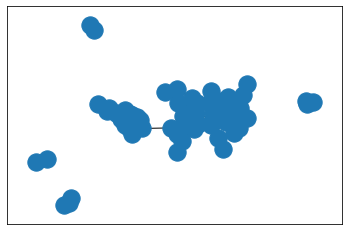

実践的なグラフデータの解析¶
データの準備¶
[1]:
import pandas as pd
titles_all = pd.read_csv("data/titles.csv", index_col="id")
print(titles_all.shape)
titles_all.head()
(5806, 14)
[1]:
| title | type | description | release_year | age_certification | runtime | genres | production_countries | seasons | imdb_id | imdb_score | imdb_votes | tmdb_popularity | tmdb_score | |
|---|---|---|---|---|---|---|---|---|---|---|---|---|---|---|
| id | ||||||||||||||
| ts300399 | Five Came Back: The Reference Films | SHOW | This collection includes 12 World War II-era p... | 1945 | TV-MA | 48 | ['documentation'] | ['US'] | 1.0 | NaN | NaN | NaN | 0.600 | NaN |
| tm84618 | Taxi Driver | MOVIE | A mentally unstable Vietnam War veteran works ... | 1976 | R | 113 | ['crime', 'drama'] | ['US'] | NaN | tt0075314 | 8.3 | 795222.0 | 27.612 | 8.2 |
| tm127384 | Monty Python and the Holy Grail | MOVIE | King Arthur, accompanied by his squire, recrui... | 1975 | PG | 91 | ['comedy', 'fantasy'] | ['GB'] | NaN | tt0071853 | 8.2 | 530877.0 | 18.216 | 7.8 |
| tm70993 | Life of Brian | MOVIE | Brian Cohen is an average young Jewish man, bu... | 1979 | R | 94 | ['comedy'] | ['GB'] | NaN | tt0079470 | 8.0 | 392419.0 | 17.505 | 7.8 |
| tm190788 | The Exorcist | MOVIE | 12-year-old Regan MacNeil begins to adapt an e... | 1973 | R | 133 | ['horror'] | ['US'] | NaN | tt0070047 | 8.1 | 391942.0 | 95.337 | 7.7 |
[2]:
titles = titles_all.loc[(titles_all["type"] == "MOVIE") &
(titles_all["release_year"] > 1990) &
(titles_all["release_year"] < 2000)]
titles.shape
[2]:
(103, 14)
[3]:
actors = pd.read_csv("data/credits.csv")
print(actors.shape)
actors.head()
(77213, 5)
[3]:
| person_id | id | name | character | role | |
|---|---|---|---|---|---|
| 0 | 3748 | tm84618 | Robert De Niro | Travis Bickle | ACTOR |
| 1 | 14658 | tm84618 | Jodie Foster | Iris Steensma | ACTOR |
| 2 | 7064 | tm84618 | Albert Brooks | Tom | ACTOR |
| 3 | 3739 | tm84618 | Harvey Keitel | Matthew 'Sport' Higgins | ACTOR |
| 4 | 48933 | tm84618 | Cybill Shepherd | Betsy | ACTOR |
[4]:
actors_gr = actors.groupby("role").get_group("ACTOR").groupby("id")
[5]:
import itertools
# 2つの映画のIDとそれらに共通して出演している俳優の数を保持する
movie_a_b_list = []
# actors_grにあるすべての映画のタイトル
all_movies = set(actors_gr.groups.keys())
for movie_a, movie_b in itertools.combinations(titles.index, 2):
# グループ化したキーにmovie_aとmovie_bが両方存在した場合
if movie_a in all_movies and movie_b in all_movies:
# movie_aとmovie_bの出演者をsetにする
set_a = set(actors_gr["person_id"].get_group(movie_a))
set_b = set(actors_gr["person_id"].get_group(movie_b))
# 共通して出演している俳優の数
n = len(set_a & set_b)
if n > 0:
movie_a_b_list.append([movie_a, movie_b, n])
# できあがったリストの最初の5行
movie_a_b_list[:5]
[5]:
[['tm11556', 'tm122434', 1],
['tm11556', 'tm187187', 2],
['tm11556', 'tm187791', 1],
['tm11556', 'tm61103', 1],
['tm11556', 'tm55732', 1]]
[6]:
actor_overlaps = pd.DataFrame(
movie_a_b_list,
columns=[
"movie_A",
"movie_B",
"weight",
],
)
actor_overlaps.head()
[6]:
| movie_A | movie_B | weight | |
|---|---|---|---|
| 0 | tm11556 | tm122434 | 1 |
| 1 | tm11556 | tm187187 | 2 |
| 2 | tm11556 | tm187791 | 1 |
| 3 | tm11556 | tm61103 | 1 |
| 4 | tm11556 | tm55732 | 1 |
グラフの構築¶
[7]:
import networkx as nx
all_movie_graph = nx.from_pandas_edgelist(
actor_overlaps,
source="movie_A",
target="movie_B",
edge_attr="weight",
)
[8]:
# ノードのラベルを非表示にしています
nx.draw_networkx(all_movie_graph, with_labels=False)

[9]:
largest_component = max(
nx.connected_components(all_movie_graph),
key=len,
)
movie_graph = all_movie_graph.subgraph(largest_component)
[10]:
from pyvis.network import Network
# 描画する際のサイズを指定できます
nt = Network(height="800px", width="800px", notebook=True, cdn_resources="in_line")
nt.from_nx(movie_graph)
nt.show("movie_graph.html")
movie_graph.html
[10]:
[11]:
titles["production_countries"].value_counts().head()
[11]:
production_countries
['US'] 43
['IN'] 29
['EG', 'FR'] 3
['GB'] 3
['US', 'JP'] 2
Name: count, dtype: int64
[12]:
for node in movie_graph:
# nodeはタイトルのIDになっているのでDataFrameの行を取得
row = titles.loc[node]
# ノードのtitle属性に、映画のタイトルと制作した国を追加
movie_graph.nodes[node][
"title"
] = f"{row['title']} {row['production_countries']}"
# 文字列からeval関数でリストを生成
countries = eval(row["production_countries"])
# 国ごとに色分け
if len(countries) == 1:
if countries[0] == "US":
movie_graph.nodes[node]["color"] = "#636EFA" # 青
if countries[0] == "IN":
movie_graph.nodes[node]["color"] = "#EF553B" # 赤
# 以下のようにshape属性を指定できます。
# movie_graph.nodes[node]["shape"] = "ellipse"
else:
movie_graph.nodes[node]["color"] = "#00CC96" # 緑
# movie_graph.nodes[node]["shape"] = "box" # 青
[13]:
nt = Network("800px", "800px", notebook=True, cdn_resources="in_line")
nt.from_nx(movie_graph)
nt.show("colored_movie_graph.html")
colored_movie_graph.html
[13]:
ノードの特徴を定量化する¶
[14]:
# ノードのリストを作成
node_list = list(movie_graph.nodes())
# グラフに含まれるタイトルだけのDataFrame
titles_in_graph = titles.loc[node_list, :]
# 次数中心性の計算
deg_cent = nx.degree_centrality(movie_graph)
# degree centralityの列を追加
titles_in_graph["degree_centrality"] = [deg_cent[node] for node in node_list]
# 出力列を限定
cols = [
"title",
"production_countries",
"degree_centrality",
]
# 次数中心性で降順にソート
titles_in_graph[cols].sort_values("degree_centrality", ascending=False)
[14]:
| title | production_countries | degree_centrality | |
|---|---|---|---|
| id | |||
| tm67635 | Kuch Kuch Hota Hai | ['IN'] | 0.266667 |
| tm58893 | Duplicate | ['IN'] | 0.253333 |
| tm8859 | Oh Darling! Yeh Hai India! | ['IN'] | 0.240000 |
| tm105716 | Chaahat | ['IN'] | 0.213333 |
| tm118438 | Anjaam | ['IN'] | 0.200000 |
| ... | ... | ... | ... |
| tm191431 | Double Team | ['US', 'HK'] | 0.013333 |
| tm12499 | The Net | ['US'] | 0.013333 |
| tm54903 | Wild Things | ['US'] | 0.013333 |
| tm188606 | Sankofa | ['GH', 'GB', 'US', 'BF', 'DE'] | 0.013333 |
| tm21911 | Sam Kinison: Live in Vegas | ['US'] | 0.013333 |
76 rows × 3 columns
[15]:
# 媒介中心性を計算します。
bet_cent = nx.betweenness_centrality(movie_graph)
# 媒介中心性のデータを追加
titles_in_graph["betweenness_centrality"] = [bet_cent[node] for node in node_list]
# 出力列を限定
cols = [
"title",
"production_countries",
"betweenness_centrality",
]
# 降順で並べ変えて表示
titles_in_graph[cols].sort_values(
"betweenness_centrality",
ascending=False,
)
[15]:
| title | production_countries | betweenness_centrality | |
|---|---|---|---|
| id | |||
| tm191772 | Seven Years in Tibet | ['US'] | 0.493916 |
| tm334788 | Yodha | ['IN'] | 0.481459 |
| tm1822 | 3 Ninjas Kick Back | ['US', 'JP'] | 0.306412 |
| tm191989 | Donnie Brasco | ['US'] | 0.287926 |
| tm48430 | Godzilla | ['US'] | 0.218295 |
| ... | ... | ... | ... |
| tm12499 | The Net | ['US'] | 0.000000 |
| tm117488 | The Next Karate Kid | ['US'] | 0.000000 |
| tm54903 | Wild Things | ['US'] | 0.000000 |
| tm188606 | Sankofa | ['GH', 'GB', 'US', 'BF', 'DE'] | 0.000000 |
| tm21911 | Sam Kinison: Live in Vegas | ['US'] | 0.000000 |
76 rows × 3 columns